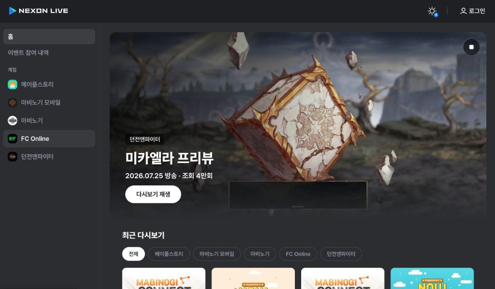
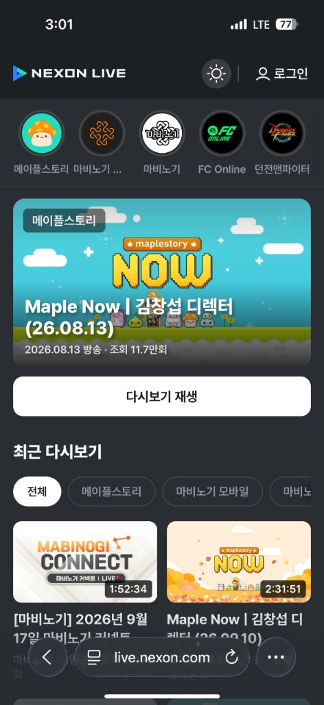
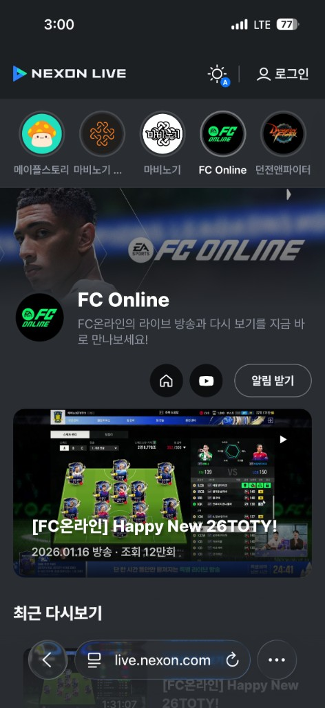
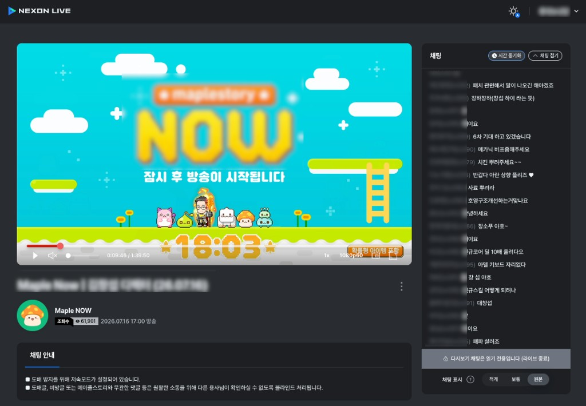
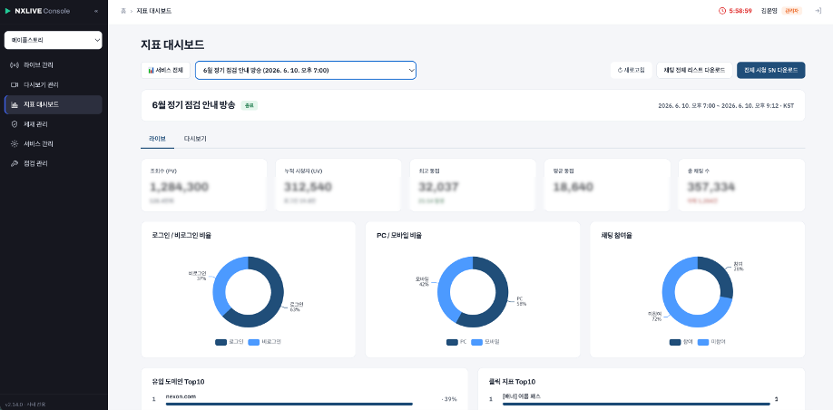

넥슨라이브 · 라이브 스트리밍 콘텐츠 플랫폼 (live.nexon.com)
기존 네이버 쇼핑 라이브·YouTube에 의존하던 라이브 방송을 넥슨 자체 플랫폼(live.nexon.com)으로 전환합니다. 넥슨 계정 기반이라 시청 유저를 식별(NexonSN·PRIME 여부 등)할 수 있고, NXLog 적재로 방송 성과를 데이터로 직접 분석할 수 있는 것이 핵심 차별점입니다.
- 라이브 쇼케이스 — 신규 업데이트 홍보, 디렉터 소통 등 1st-party 공식 방송 송출
- 라이브 커머스 + 이벤트 — 방송 중 상품 판매, 라이브 퀴즈(OX/객관식)·드롭스·실시간 투표로 매출·참여 부스팅
- 실시간 소통 — 게임 캐릭터명·레벨 연동 채팅, 클린챗봇 필터링, 저속모드로 유저 소통 채널 강화
기획부터 런칭, 그리고 성과 측정까지 한 사이클을 완결했습니다. 온보딩부터 콘텐츠 소비까지 유저 여정 전체를 아우르며, 데이터 기준과 감상 경험을 동시에 설계했습니다.
- 진입 허브 · 콘텐츠 탐색 설계 — 링크를 알아야만 도달할 수 있던 구조를 개선. 상태별(라이브)→게임별 하이브리드 IA로 탐색 동선 구축
- 다시보기(VOD) 감상 경험 — 시간 동기화 채팅 재생, 자동 자막(STT), 편집·게시 콘솔까지 감상·운영 전 과정 기획
- 운영 콘솔 기획 — 채널 관리, 배너·공지 편성, 점검 범위 제어, 알림 신청자 관리까지 운영 자립 구조 설계
- 측정 체계 직접 설계 — 사이트 기여도·전환율·체류·알림 전환의 지표 정의와 집계 기준을 직접 수립하고 SQL로 검증
- 경쟁사 벤치마킹 — 치지직·유튜브·SOOP를 분석해 1st-party 콘텐츠 아카이빙 전략 수립
공식 사이트 기획 · 오픈



넥슨라이브에는 방송을 모아 볼 수 있는 진입점이 없었습니다. 유저는 방송별 링크를 알아야만 들어올 수 있었고, 링크는 유튜브 커뮤니티·게임 홈페이지 등에 개별 게시되어 “어디서 어떻게 들어가는지”에 대한 문의와 동선 혼선이 반복됐습니다. 다시보기(VOD)가 추가되면서 지난 방송을 한곳에서 찾아볼 수 있는 공간도 필요해졌습니다.
공식 사이트(live.nexon.com)를 서비스의 진입 허브이자 인지 앵커로 정의하고, 목표를 진입 허브화 · 다시보기 소비 · 재방문 · 회원 전환 네 가지로 설정했습니다.
- 상태별 홈 → 게임별 허브의 하이브리드 IA — 홈은 ‘지금 볼 수 있는 방송’(현재 LIVE·예정 임박순) 중심으로, 게임·서비스 허브는 게임별 라이브와 다시보기 아카이브로 구성
- LNB 전역 내비게이션 — 홈 · 다시보기 · 공지사항 · 이벤트 참여 내역 + ‘게임’ 목록(방송 많은 순, 라이브 중 아이콘 표시). 별도 ‘게임·서비스’ 메뉴 없이 LNB에서 바로 진입
- 슬림 상단 바 — 통합 검색 · 라이트/다크 테마 · 우측 상단 사용자 메뉴만 배치하고, 모바일은 드로어로 전환
- v1 범위 — 홈 · 게임 허브 · 다시보기(인기·최신 통합) · 마이페이지 · 넥슨ID 로그인, 빈 상태, 점검 페이지, 방송 알림, 다시보기 상세(시간 동기화 채팅·VOD 댓글), 반응형, 운영 콘솔 연동, A2S 클릭 로깅
- 제외 범위 명시 — 클립/숏폼, 편성표는 v1에서 제외해 오픈 일정 안에서 핵심 여정(진입 → 시청 → 재방문)에 집중
오픈 후 성과 측정
2026년 9월 4일 사이트 오픈 후 첫 라이브 방송(메이플스토리 Maple Now, 9월 10일 17:00–19:03)을 대상으로 사이트가 실제로 방송 유입에 기여하는지, 사이트를 경유한 시청자의 행동이 다른지를 직접 측정했습니다.
총 시청 52,332 UV(57,589 세션) · 사이트 방문 19,437 UV(21,411 세션)
① 대기 공간
방송 시작 직후 2분간 사이트 경유 비중이 평시 18% → 38%로 두 배. 시작 전 16시 피크 6,111세션이 사이트에서 대기
② 전환 관문
사이트 방문자 4명 중 3명(74.4%)이 실제 시청으로 이어짐. 둘러보고 떠나는 곳이 아닌 방송으로 가는 관문
③ 체류 증가
사이트 경유 시청자가 평균 1.6배, 상위 10%(P90) 기준 1.3배 더 오래 시청. 세션당 이벤트도 9.2 → 13.5건
핵심 발견 — 사이트는 ‘대기 공간’이었습니다. 공유 링크는 누르면 바로 들어가지만, 대기하다가 시작 시점에 진입하는 흐름은 사이트가 있어야만 가능합니다. 이 발견으로 “방송 직전 30분의 사이트 유입을 늘리면 시작 시점 시청자 수가 늘어난다”는 후속 가설을 세웠습니다.
- 지표 정의 직접 수립 — 사이트 기여 = 메인 배너·방송 목록·게임 허브 클릭을 경유한 방송 진입 세션 ÷ 전체 방송 진입 세션. 전환율·알림 순증·알림 성공률(분모 = 로그인 상태의 신청 시도)도 같은 방식으로 정의
- 로그인 리디렉트 세션 분리 — 로그인 페이지를 거치면 referer가 덮여 원래 유입 경로가 사라지는 세션 22,238건(약 30%)을 유입 채널 집계에서 제외해 채널 비중 왜곡 방지
- 재접속과 신규 유입 구분 — 방송 종료 직전(19:02–03) 급증한 2,707세션 중 73.5%가 재접속임을 확인해, 신규 유입으로 잘못 해석하지 않도록 분리
- 알림 이벤트 분리 집계 — 채널 구독(게임 단위)과 방송 알림(방송 단위)을 별도 키로 나눠 집계하고, UTC로 적재된 로그 시각을 KST로 변환해 시간대 분석 오류 방지
- 과장하지 않는 보고 — 체류 중위값 비교는 26배로 크게 나오지만 분포 특성상 반박 여지가 있어, 보고에는 평균 1.6배 · P90 1.3배만 인용
기존 외부 플랫폼 대비 시청 규모가 크게 상승했으며, 라이브 커머스 진행 시 타사(네이버 쇼핑 라이브 판매 수수료 약 8.4%) 대비 판매 수수료 절감 효과도 확보했습니다.
기획 산출물
"개별 방송 송출"에 머물던 넥슨라이브를 "게임·서비스별 라이브 + 다시보기를 모아 보는 플랫폼"으로 확장하기 위해, 진입 허브(메인)·회귀 시청(VOD)·성과 측정(대시보드)·운영(콘솔)의 4개 축을 각각 PRD로 설계했습니다. 각 기획물은 AI가 이해하기 쉬운 마크다운(Markdown) 형식의 PRD로 작성한 뒤, Claude로 HTML 프로토타입을 직접 개발해 화면·인터랙션을 빠르게 검증했습니다.
메인 페이지 — 진입 허브 신설
"어디서 어떻게 들어가는지" 모르던 문제를 해결하기 위해 live.nexon.com 진입 허브를 설계했습니다. 상태별(현재 LIVE·예정 임박순) 홈 → 게임·서비스별 허브로 전환하는 하이브리드 IA, LNB 전역 내비, 현재 LIVE 대형 배너(2건+ 동접순 캐러셀), 인기/최근 다시보기, 통합 검색, 마이페이지(당첨 현황), 알림톡 방송 알림까지 v1 범위를 정의했고, 2026년 9월 정식 오픈했습니다.
라이브 다시보기(VOD) 기능
라이브 종료 webhook으로 빌드가 자동 트리거되고, "다시보기 바로 등록" 토글 ON 시 빌드 완료 즉시 자동 게시되는 무인 파이프라인을 설계했습니다. AWS Transcribe 기반 자동 자막(STT), 방송 시점 채팅을 재생 위치에 동기화하는 읽기 전용 채팅 재생, 비파괴 매니페스트 오버레이 방식의 구간 자르기(Trim), 11단계 빌드 워커와 4종 실패 분류·재시도 정책까지 상태 머신으로 정리했습니다.

지표 대시보드 — 운영 콘솔 임베드
방송 종료 후 Power BI 리포트로 이원화되어 있던 지표 확인 동선을 운영 콘솔 안으로 통합했습니다. 방송 선택 → 라이브/다시보기 탭으로 PV·UV·최고/평균 동접·채팅·유입 도메인·디바이스 비율 등을 조회하며, 데이터는 Snowflake(NXLog)를 단일 소스로 직접 조회하도록 설계했습니다.

관리 콘솔 업데이트
플랫폼 확장에 맞춰 운영 기능을 신설·개편했습니다. 채널 관리(대표 정보·노출 요소 토글·퀵메뉴·게시글·알림 신청자 관리), 배너/공지/점검 관리, 그리고 라이브 등록 폼에 "넥슨라이브 공식페이지 노출"(콘텐츠 유형·이벤트/선물 태그) 섹션을 추가해 메인·게임 채널의 방송 카드와 연동되도록 했습니다.
- UV 식별 기준 Pcid 통일 — 로그인/비로그인 무관하게 Pcid 기준으로 UV를 집계해, 비로그인→로그인 전환 시 발생하던 중복 카운트를 원천 차단. 로그인 수는 별도 지표로 분리했습니다.
- 다시보기 채팅 익명화 정책 폐기 — 라이브와 동일한 실제 닉네임·레벨·명성을 그대로 표기해 현장감을 살리되, 개인정보 대응으로 30일 이내 탈퇴 유저 채팅 삭제 잡을 후속 설계했습니다.
- 다시보기 URL 분리 + 자동 리다이렉트 — 라이브(
/lives/{id})와 다시보기(/replays/{id})를 별도 폴더로 분리해 SEO·공유 링크를 보존하고, 게시 완료 시 종료 화면·CTA 없이 즉시 다시보기로 라우팅 치환하도록 정책을 확정했습니다. - 채팅 표시 밀도 = 시청자 제어 — 빌드 시점 일괄 샘플링·1분당 최소 보장 정책을 폐기하고, "적게/보통/원본(기본)"을 시청자가 직접 조절하도록 전환. 조작 의혹 차단을 위해 매 진입 시 "원본"으로 초기화합니다.
- 데이터 쿼리 하드코딩 제거 — 방송 추가 때마다 수동 갱신하던
web_titleCASE 매핑을, WEB_IMP의sessionid ↔ broadcastId매핑을 WEB_VIEW에 조인하는 방식으로 대체해 방송 ID만으로 모든 지표를 산출하도록 설계했습니다.
기획서를 문서로만 남기지 않고, AI가 곧바로 읽고 화면으로 구현할 수 있는 형태로 작성했습니다. 사람과 AI가 함께 읽는 명세를 만들고, 그 명세를 Claude로 즉시 프로토타입화해 기획–검증 사이클을 단축했습니다.
- AI 친화적 명세 — 배경·IA·기능 명세·상태 머신·엣지 케이스를 구조화된 마크다운으로 작성해, 사람과 AI 모두 모호함 없이 해석할 수 있는 단일 기준 문서로 정리
- 즉시 프로토타이핑 — 정제된 PRD를 Claude에 입력해 HTML 프로토타입을 직접 개발, 텍스트 기획을 실제 화면·인터랙션으로 빠르게 확인
- 양방향 검증 루프 — 프로토타입에서 발견한 빈틈을 다시 PRD에 반영하는 명세↔화면 반복으로 기획 완성도와 개발 착수 속도를 함께 확보
치지직·YouTube·SOOP를 벤치마킹하되, 넥슨라이브는 UGC 스트리머 플랫폼이 아닌 1st-party 공식 방송 + 게임 계정 연동 플랫폼이라는 점에서 "스트리머 나열"이 아닌 "게임/시리즈 아카이빙" 관점으로 IA를 설계했습니다.
게임 닉네임 연동
채팅·참여 UI에 실제 서버·캐릭터명·명성 노출 (넥슨ID–게임 계정 연동)
게임 직결 인터랙션
드롭스·퀴즈·투표·쇼핑이 게임 재화·아이템·이벤트와 직접 연동
공식·신뢰 콘텐츠
디렉터·개발팀의 1st-party 발표 = 정보의 원천(source of truth)
단일 계정 경험
별도 가입 없이 넥슨ID로 시청·참여·당첨 확인까지 일원화
유저 식별·로깅
NexonSN·PRIME 식별 + NXLog 적재로 데이터 기반 성과 분석
콘텐츠 플랫폼의 본질은 “어떻게 발견하고, 몰입하고, 다시 찾게 만들 것인가”를 유저 여정 전체로 설계하는 일임을 다시 확인했습니다. 그리고 그 설계가 실제로 작동했는지는 지표 정의부터 스스로 세워야 답할 수 있다는 것을 배웠습니다.